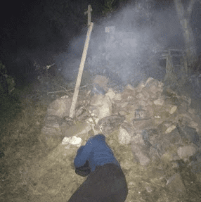

Spot na chlanie za garażem
Miejsce na ogniska i chlanie na terenie gospodarstwa Wasilewskich.

Bartek śpi na wygodnym kamieniu
Opis
Miejsce do chlania wymyślone przez Dominika. Stało się ono głownym pilońskim spotem do picia po upadku Meliny wskutek dominacji szerszeni nad rasą ludzką. W przeciwieństwie do wcześniejszych chlań w tym miejscu zdecydowanie dominowało ognisko, co zlikwidowało rolę grill mastera, którym był Jan.Ważne wydarzenia
- Pilońskie grille i ogniska
- Mistrzostwa picia wódki
Ciekawostki
- Zostały tam zarzygane okulary
- Powstało tam sławne zdjęcie, na którym Bartej śpi na kamieniu.